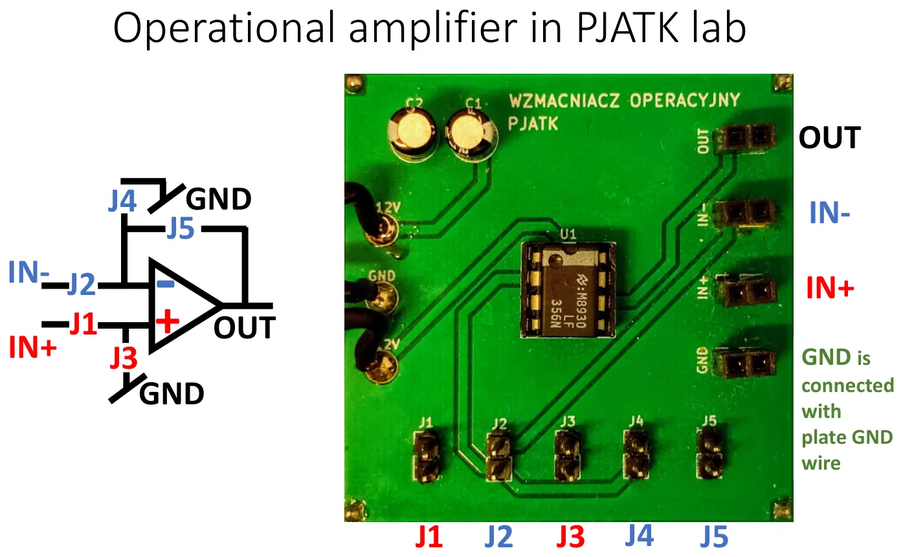
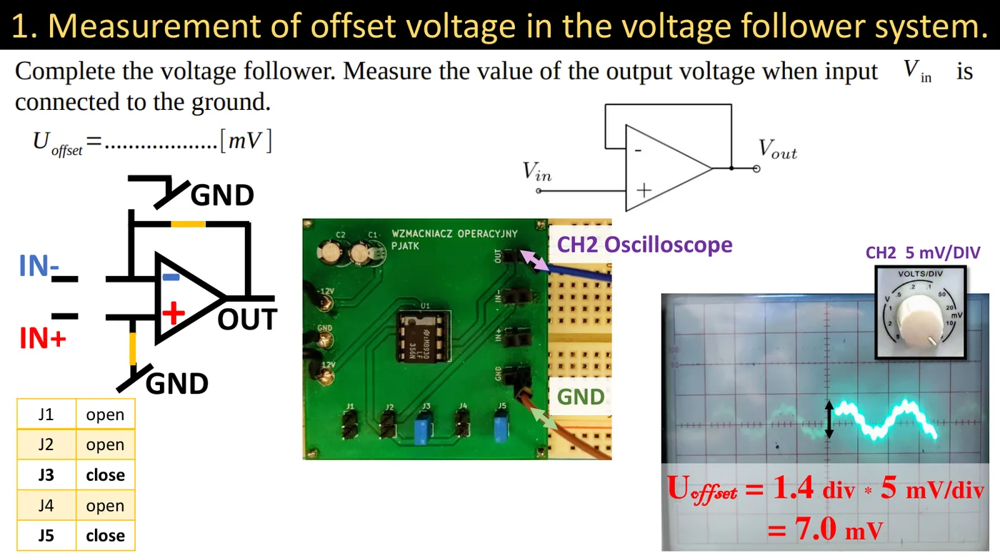
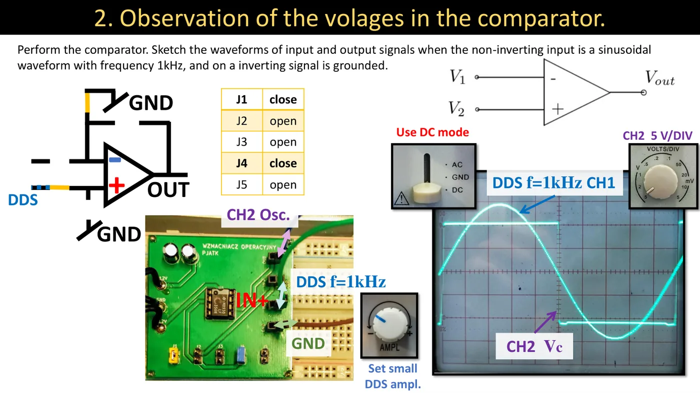
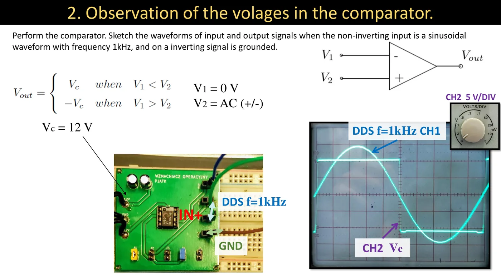
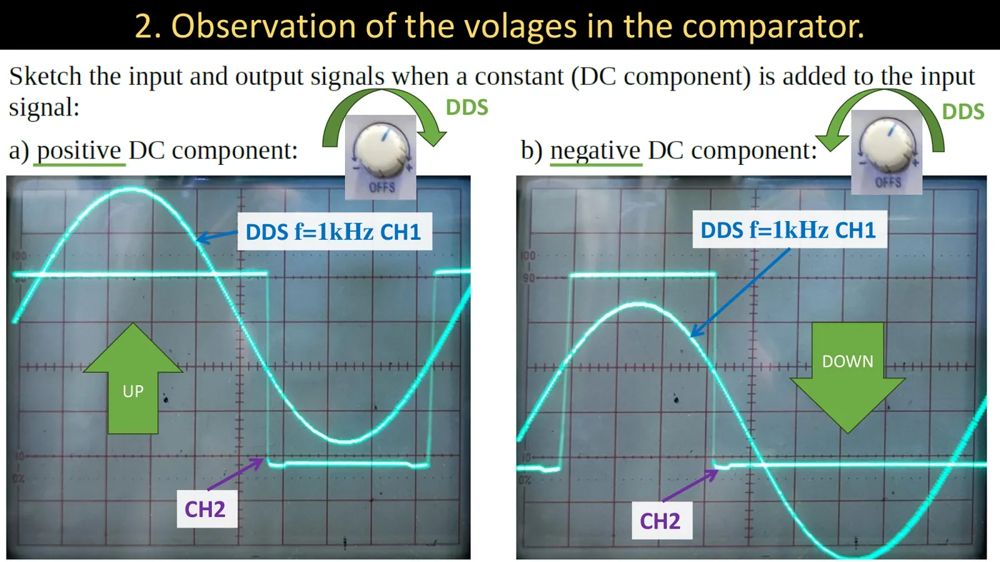
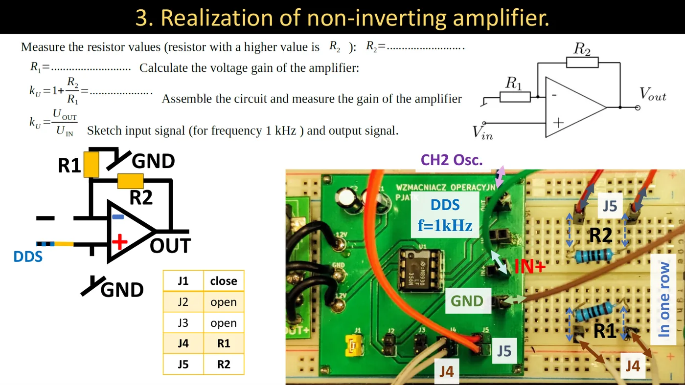
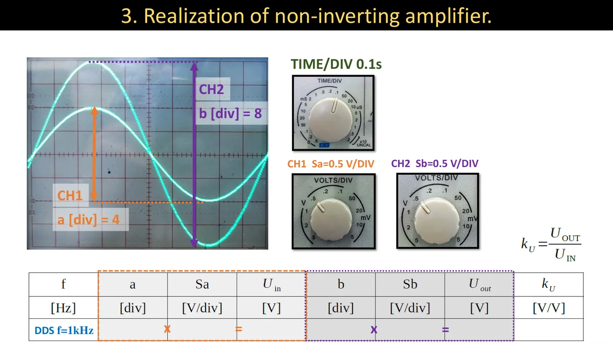
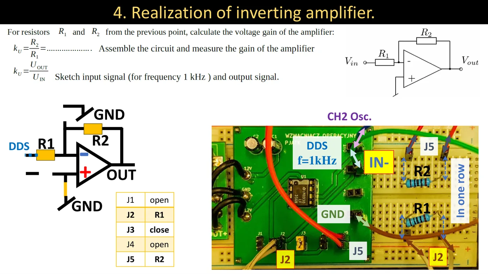
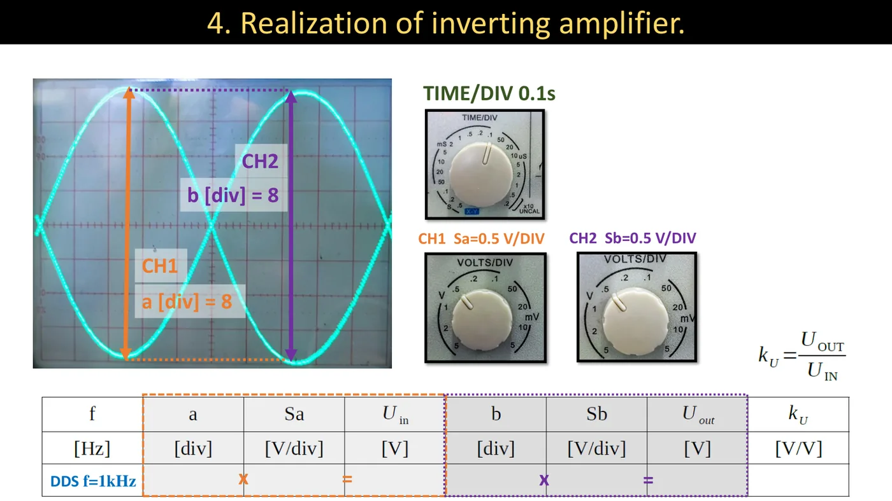

Что нужно уметь перед занятием
- Формулы усиления инвертирующей и неинвертирующей схемы, работу повторителя и компаратора — лекция 5 (Краткий конспект).
- Измерение амплитуды на двух каналах осциллографа — лабораторная 4.
Из лекции 1 (2026/27)
«Вам нужно будет спроектировать и рассчитать инвертирующий и неинвертирующий усилитель. Потом эти усилители нужно будет собрать и посмотреть, как расчёты соотносятся с физически собранными усилителями.» И предостережение: частая грубая ошибка — измерение усилителя, которому забыли включить питание.
Лабораторный модуль


На плате один операционный усилитель (микросхема LM358) с питанием ±12 В. Какая схема получится, определяют пять перемычек:
| Перемычка | Что соединяет |
|---|---|
| J1 | гнездо IN+ с неинвертирующим входом (+) усилителя |
| J2 | гнездо IN− с инвертирующим входом (−) |
| J3 | вход (+) с массой |
| J4 | вход (−) с массой |
| J5 | вход (−) с выходом (петля обратной связи) |
Каждая перемычка может быть разомкнута (нет соединения), замкнута или заменена резистором, вставленным между её контактами через макетную плату.
Внимание
Масса платы соединена проводом с массой (GND) макетной платы — массы генератора и осциллографа должны приходить именно туда. Перед каждым измерением проверь, что модуль запитан.
Задание 1 — напряжение смещения (повторитель)
Повторитель должен давать на выходе ровно то, что на входе. Вход замыкаем на массу — на выходе должно быть 0 В. То, что там остаётся, — это напряжение смещения (napięcie niezrównoważenia, offset).


| J1 | J2 | J3 | J4 | J5 |
|---|---|---|---|---|
| разомкнута | разомкнута | замкнута | разомкнута | замкнута |
По шагам
- Поставь перемычки по таблице: J3 замыкает вход (+) на массу, J5 соединяет выход со входом (−).
- Канал CH2 осциллографа подключи к выходу OUT, массу — к GND.
- Переключатель входа осциллографа на GND — поставь нулевую линию по центру; потом переключи на DC.
- Выставь наибольшую чувствительность (например, 5 мВ/дел) — напряжение очень маленькое.
- Считай, на сколько делений линия отошла от нуля, и умножь на чувствительность.
Пример из материалов к занятиям
Uсмещ = 1,4 дел · 5 мВ/дел = 7,0 мВ
Задание 2 — компаратор
Без обратной связи усилитель сравнивает напряжения на входах: когда на «+» больше, чем на «−», выход прыгает к положительному напряжению питания, иначе — к отрицательному.


| J1 | J2 | J3 | J4 | J5 |
|---|---|---|---|---|
| замкнута | разомкнута | разомкнута | замкнута | разомкнута |
По шагам
- Поставь перемычки: J1 подаёт сигнал с IN+ на вход (+), J4 замыкает вход (−) на массу, J5 разомкнута — обратной связи нет.
- Генератор: синус 1 кГц, маленькая амплитуда. Подключи его к IN+ и одновременно к CH1 осциллографа.
- CH2 осциллографа — к выходу OUT; чувствительность около 5 В/дел, вход в режиме DC.
- MODE → DUAL. Зарисуй оба сигнала один под другим.
- Ручкой OFFS генератора добавь положительную постоянную составляющую — зарисуй, что изменилось.
- Поверни OFFS в другую сторону (отрицательная постоянная составляющая) — зарисуй снова.


Что ты увидишь: на выходе прямоугольник той же частоты. Пока синус выше нуля — выход в плюсе (+Vc, около 12 В), пока ниже — в минусе.


- Положительная постоянная составляющая поднимает синус — большая его часть выше нуля, поэтому прямоугольник дольше находится в высоком состоянии.
- Отрицательная — наоборот: высокое состояние длится меньше.
От автора сайта (не из лекции)
Компаратор с порогом 0 В — это, по сути, простейший преобразователь «аналог → цифра»: он отвечает только «больше» или «меньше». На таких компараторах построен быстрый АЦП из лекции 13.
Задание 3 — неинвертирующий усилитель


| J1 | J2 | J3 | J4 | J5 |
|---|---|---|---|---|
| замкнута | разомкнута | разомкнута | R1 | R2 |
По шагам
- Измерь мультиметром оба резистора (вынутые из схемы). Больший — это R2, меньший — R1. Запиши значения.
- Вычисли усиление: kU = 1 + R2R1.
- Собери схему: R1 между контактами перемычки J4 (вход «−» на массу), R2 между контактами J5 (вход «−» к выходу), J1 замкнута.
- Генератор (синус 1 кГц) — к IN+ и к CH1. CH2 — к OUT.
- Подбери чувствительности и запиши: a — деления входа, Sa — чувствительность CH1, b — деления выхода, Sb — чувствительность CH2.
- Посчитай Uвх = a · Sa, Uвых = b · Sb и измеренное усиление kU = UвыхUвх.
- Зарисуй оба сигнала. Сравни расчётное усиление с измеренным.


Пример из материалов к занятиям
a = 4 дел, Sa = 0,5 В/дел → Uвх = 2 В; b = 8 дел, Sb = 0,5 В/дел → Uвых = 4 В
kU = 42 = 2 — то есть в этом примере R1 = R2 (потому что 1 + 1 = 2). Выход в фазе со входом.
Задание 4 — инвертирующий усилитель
Те же резисторы, другое включение: сигнал входит через R1 на вход «−», а вход «+» на массе.


| J1 | J2 | J3 | J4 | J5 |
|---|---|---|---|---|
| разомкнута | R1 | замкнута | разомкнута | R2 |
По шагам
- Вычисли усиление: kU = R2R1 (в бланке без минуса — минус означает только переворот фазы).
- Пересобери схему: R1 между контактами J2 (от IN− ко входу «−»), R2 остаётся в J5, J3 замкнута (вход «+» на массу), J1 и J4 разомкнуты.
- Генератор (синус 1 кГц) — теперь к IN− и к CH1. CH2 — к OUT.
- Измерь a, Sa, b, Sb, посчитай kU и зарисуй сигналы.


Пример из материалов к занятиям
a = 8 дел, b = 8 дел, обе чувствительности 0,5 В/дел → kU = 44 = 1 (те же резисторы R1 = R2). Выход перевёрнут: там, где у входа вершина, у выхода впадина.
Шпаргалка по перемычкам
| Схема | J1 | J2 | J3 | J4 | J5 | Сигнал |
|---|---|---|---|---|---|---|
| Повторитель (смещение) | — | — | замкнута | — | замкнута | нет (вход на массе) |
| Компаратор | замкнута | — | — | замкнута | — | IN+ |
| Неинвертирующий | замкнута | — | — | R1 | R2 | IN+ |
| Инвертирующий | — | R1 | замкнута | — | R2 | IN− |
Как это запомнить
R2 всегда в J5 (обратная связь: с выхода на вход «−»). R1 всегда касается входа «−»: в неинвертирующей схеме он идёт на массу (J4), в инвертирующей — к сигналу (J2). Вход, на который сигнал не подаётся, замыкается на массу.
Тренировочные задания
1. Усиление по резисторам
Измерено: R1 = 4,7 кОм и R2 = 15 кОм. Вычисли усиление неинвертирующей и инвертирующей схемы.
Показать решение
Неинвертирующая: kU = 1 + 154,7 = 4,19
Инвертирующая: kU = 154,7 = 3,19 (с переворотом фазы, то есть −3,19)
2. Усиление по осциллографу
Для неинвертирующей схемы из задания 1 получено: a = 3 деления при Sa = 0,2 В/дел; b = 5,1 деления при Sb = 0,5 В/дел. Каково измеренное усиление и на сколько процентов оно отличается от расчётного?
Показать решение
Uвх = 3 · 0,2 = 0,6 В; Uвых = 5,1 · 0,5 = 2,55 В; kU = 2,550,6 = 4,25
Разница: 4,25 − 4,194,19 ≈ 1,4% — очень хорошее совпадение (у резисторов и у отсчёта с экрана есть свои погрешности).
3. Обрезанный сигнал
Неинвертирующий усилитель: R1 = 1 кОм, R2 = 10 кОм, питание ±12 В. На вход подан синус размахом 3 В. Что ты увидишь на выходе?
Показать решение
kU = 1 + 10 = 11 → на выходе «должно» быть 3 · 11 = 33 В размаха, то есть ±16,5 В. Питание всего ±12 В, поэтому усилитель уходит в насыщение: вершины синуса плоско обрезаны в районе ±12 В (на практике чуть ниже).
Чтобы измерить усиление, нужно уменьшить амплитуду на генераторе, пока синус на выходе не станет чистым.
4. Компаратор с постоянной составляющей
На вход «+» компаратора подан синус амплитудой 1 В с постоянной составляющей +0,5 В; вход «−» на массе. Какую часть периода выход находится в высоком состоянии?
Показать решение
Выход высокий, когда sin(x) + 0,5 > 0, то есть sin(x) > −0,5. Синус ниже −0,5 только между 210° и 330° — это 120° из 360°.
Значит, высокое состояние длится 240°360° = 23 периода (около 67%).
5. Спроектируй усилитель
Нужен неинвертирующий усилитель с усилением 6. Есть резистор R1 = 2 кОм. Каким должен быть R2? Какое усиление даст та же пара в инвертирующей схеме?
Показать решение
1 + R22 = 6 → R2 = 10 кОм. В инвертирующей схеме: 102 = 5 (с переворотом фазы).
На чём чаще всего теряют баллы
- Модуль без питания (классическая грубая ошибка) или нет общей массы.
- Перепутаны R1 и R2 — тогда усиление получается меньше расчётного.
- Слишком большая амплитуда с генератора → обрезанный синус → заниженное «усиление».
- Перемычка, оставшаяся от предыдущего задания (например, замкнутая J3 в неинвертирующей схеме замыкает сигнал на массу).
- Измерение смещения при слишком малой чувствительности (линия «стоит на нуле») — переключись на мВ/дел.